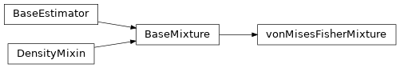

spsklearn.mixture¶
The spsklearn.mixture module implements mixture modeling algorithms.
Package Contents¶
Classes¶
von Mises-Fisher Mixture. |
-
class
spsklearn.mixture.vonMisesFisherMixture(n_components=1, *, tol=0.001, max_iter=100, n_init=1, init_params='spherical-k-means++', weights_init=None, means_init=None, kappas_init=None, random_state=None, warm_start=False, verbose=0, verbose_interval=10)[source]¶ Bases:
sklearn.mixture._base.BaseMixturevon Mises-Fisher Mixture.
Representation of a von Mises-Fisher mixture model probability distribution. This class allows to estimate the parameters of a von Mises-Fisher mixture distribution.
- Parameters
n_components (int, default=1) – The number of mixture components.
tol (float, default=1e-3) – The convergence threshold. EM iterations will stop when the lower bound average gain is below this threshold.
max_iter (int, default=100) – The number of EM iterations to perform.
n_init (int, default=1) – The number of initializations to perform. The best results are kept.
init_params ({'spherical-k-means', 'spherical-k-means++', 'random', 'random_from_data'}, default='spherical-k-means++') –
The method used to initialize the weights, the means and the precisions. String must be one of:
’spherical-k-means’ : responsibilities are initialized using spherical k-means.
’spherical-k-means++’ : use the spherical k-means++ method to initialize.
’random’ : responsibilities are initialized randomly.
’random_from_data’ : initial means are randomly selected data points.
weights_init (array-like of shape (n_components, ), default=None) – The user-provided initial weights. If it is None, weights are initialized using the init_params method.
means_init (array-like of shape (n_components, n_features), default=None) – The user-provided initial means, If it is None, means are initialized using the init_params method.
kappas_init (array-like, default=None) – The user-provided initial concentration parameter kappas. If it is None, kappas are initialized using the ‘init_params’ method.
random_state (int, RandomState instance or None, default=None) – Controls the random seed given to the method chosen to initialize the parameters (see init_params). In addition, it controls the generation of random samples from the fitted distribution (see the method sample). Pass an int for reproducible output across multiple function calls. See Glossary.
warm_start (bool, default=False) – If ‘warm_start’ is True, the solution of the last fitting is used as initialization for the next call of fit(). This can speed up convergence when fit is called several times on similar problems. In that case, ‘n_init’ is ignored and only a single initialization occurs upon the first call. See the Glossary.
verbose (int, default=0) – Enable verbose output. If 1 then it prints the current initialization and each iteration step. If greater than 1 then it prints also the log probability and the time needed for each step.
verbose_interval (int, default=10) – Number of iteration done before the next print.
-
weights_¶ The weights of each mixture components.
- Type
array-like of shape (n_components,)
-
means_¶ The mean of each mixture component.
- Type
array-like of shape (n_components, n_features)
-
kappas_¶ The concentration parameter kappas of each mixture component.
- Type
array-like
-
converged_¶ True when convergence of the best fit of EM was reached, False otherwise.
- Type
bool
-
n_iter_¶ Number of step used by the best fit of EM to reach the convergence.
- Type
int
-
lower_bound_¶ Lower bound value on the log-likelihood (of the training data with respect to the model) of the best fit of EM.
- Type
float
-
n_features_in_¶ Number of features seen during fit.
- Type
int
-
feature_names_in_¶ Names of features seen during fit. Defined only when X has feature names that are all strings.
- Type
ndarray of shape (n_features_in_,)
Examples
>>> import numpy as np >>> from spsklearn.mixture import vonMisesFisherMixture >>> X = np.array([[1, 2], [1, 4], [1, 0], [10, 2], [10, 4], [10, 0]]) >>> vmf = vonMisesFisherMixture(n_components=2, random_state=0).fit(X) >>> vmf.means_ array([[10., 2.], [ 1., 2.]]) >>> vmf.predict([[0, 0], [12, 3]]) array([1, 0])
-
fit_predict(self, X, y=None)¶ Estimate model parameters using X and predict the labels for X.
The method fits the model n_init times and sets the parameters with which the model has the largest likelihood or lower bound. Within each trial, the method iterates between E-step and M-step for max_iter times until the change of likelihood or lower bound is less than tol, otherwise, a
ConvergenceWarningis raised. After fitting, it predicts the most probable label for the input data points.- Parameters
X (array-like of shape (n_samples, n_features)) – List of n_features-dimensional data points. Each row corresponds to a single data point.
y (Ignored) – Not used, present for API consistency by convention.
- Returns
labels – Component labels.
- Return type
array, shape (n_samples,)
-
bic(self, X)¶ Bayesian information criterion for the current model on the input X.
You can refer to this mathematical section for more details regarding the formulation of the BIC used.
- Parameters
X (array of shape (n_samples, n_dimensions)) – The input samples.
- Returns
bic – The lower the better.
- Return type
float
-
aic(self, X)¶ Akaike information criterion for the current model on the input X.
You can refer to this mathematical section for more details regarding the formulation of the AIC used.
- Parameters
X (array of shape (n_samples, n_dimensions)) – The input samples.
- Returns
aic – The lower the better.
- Return type
float
-
sample(self, n_samples=1)¶ Generate random samples from the fitted von Mises-Fisher mixture distribution.
- Parameters
n_samples (int, default=1) – Number of samples to generate.
- Returns
X (array, shape (n_samples, n_features)) – Randomly generated sample.
y (array, shape (nsamples,)) – Component labels.